متغیر، محلی از حافظه RAM است که برای ذخیره موقت داده استفاده میشود. در پایتون برای ایجاد متغیر نیازی نیست که ابتدا آن را تعریف (declare) و سپس مقداردهی (initialize) کنید؛ نوع داده بهصورت خودکار تشخیص داده میشود (شکل14). کافی است که در سمت چپ عملگر انتساب یعنی " = " نام متغیر و در سمت راست آن، مقدارش را بنویسید. name="baran" , num = 55 پایتون از انواع مختلفی از متغیرها پشتیبانی میکند (شکل 15).
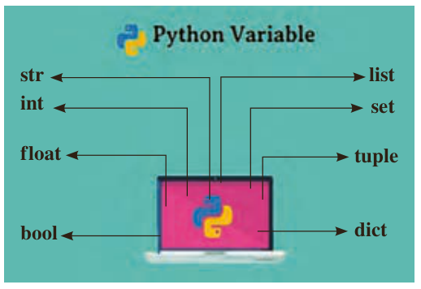
شکل ۱۵
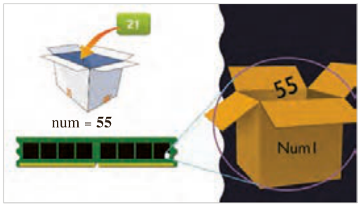
شکل ۱۴
پایتون از روی مقداری که به متغیر اختصاص داده میشود، نوع آن را تشخیص میدهد.
مثال: num1=15 در این مثال پایتون نوع متغیر را از نوع عدد صحیح تعیین میکند و نیازی به بیان نوع متغیر هم نیست.
انواع داده پرکاربرد در پایتون
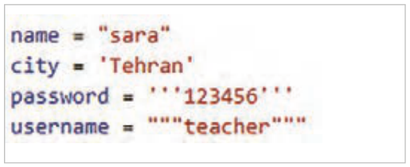
شکل ۱۶
نوع داده رشتهای (str): هر چیزی که متن باشد، مثل اسم، پیام، ایمیل، رمز عبور، شماره تلفن، توضیح، نوع داده رشتهای (str) است.
نوع داده str که اختصار یافته کلمه string است را میتوانید با استفاده از علامت نقلقول تکی یا دوتایی یا سهتایی تعریف کنید (شکل16).
نوع داده عدد صحیح (int): عددهایی که با آنها محاسبه انجام میدهید و اعشار ندارند همان عددهای صحیح (int) یا همان integer، هستند (شکل17).
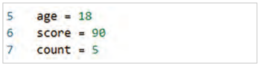
شکل ۱۷
صفحه ۹
نوع داده عدد اعشاری (float): این دادهها عددی هستند و در محاسبات ریاضی به کار گرفته میشوند و دارای مقدار اعشاری هستند. مثل:
height = 1.75
تابع type(): خروجی تابع type(), نوع داده هر متغیر میباشد (شکل18).
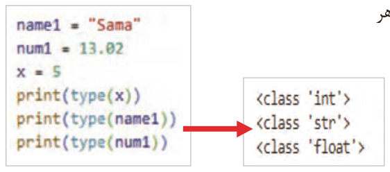
شکل ۱۸
از این مرحله به بعد کدها را در محیط VS Code بنویسید. برای انجام این کار برنامه VS Code را اجرا کرده و سپس از منوی فایل دستور new folder یکپوشه جدید به نام PyProg ایجاد کنید و سپس در آن پوشه از منو فایل با انتخاب گزینه New File، کادر EXPLORER انتخاب دکمه New File و یا کلیدهای ترکیبی Ctrl+ N فایل جدیدی به نام prog01.py در این پوشه ایجاد کنید (شکل 19). حالا صفحه ویرایشگر کد باز شده و میتوانید دستورات خود را در آن بنویسید.
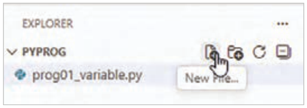
شکل ۱۹
برای اجرای دستورات از دکمه در سمت راستبالای صفحه برنامه یا منوی Run استفاده کنید. نتیجه اجرای برنامه در پایین صفحه، نمایش داده خواهد شد (شکل20).
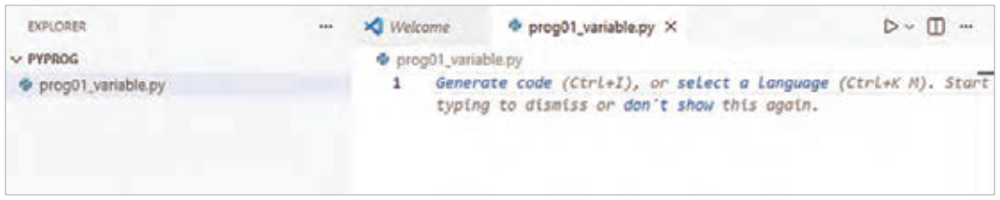
شکل ۲۰
شیوهنامه نگارش پایتون (PEP)
نحوه نگارش کدهای پایتون و قراردادهای کدنویسی را ارائه میدهد و باعث خوانایی بیشتر و تمیز (clean) شدن کدها میشود. برای مشاهده میتوانید به pep8.ir مراجعه کنید.
صفحه ۱۰
در VSCode پس از کدنویسی با فشار کلیدهای Alt+Shift+F به طور خودکار بیشتر مشکلات فرمت کد را بر اساس pep8 اصلاح میکند. بهشرط آنکه یکی از افزونههای autopep8، Black formatter، Ruff یا yapf نصب شده باشد.
قواعد نامگذاری متغیرها در پایتون
نام متغیر نمیتواند شامل کاراکتر فاصله باشد. به طور مثال نمیتوان متغیری با نام is valid تعریف کرد.
نامگذاری متغیرها در پایتون باید با یک حرف یا زیر خط آغاز شود. مثل (num، _personal)
نام متغیر میتواند شامل حروف، اعداد و زیر خط باشد.
نام متغیرها به حروف کوچک و بزرگ حساس است Age، age و AGE سه متغیر متفاوت هستند.
نام متغیر نباید هیچ یک از کلمات کلیدی پایتون باشد. نامهای var, import، const، if، for بهعنوان نام متغیر اشتباه است. چون این کلمات از کلمات کلیدی پایتون هستند.
عملگر (operator): نمادهای ویژهای هستند که عملیات خاصی را روی مقادیر یا متغیرها انجام میدهند. در این عبارات a + b یا c * d یا 4/2 به +، * و / عملگر (operator) گفته میشود.
عملوند (operand): مقدار یا مقدارهایی هستند که عملگرها روی آن کار میکنند. مثلاً در عبارت a + b علامت "+" عملگر و a, b عملوند هستند.
صفحه ۱۱
عملوندهایِ عملگر " +" در پایتون میتوانند، هر دو عددی یا هر دو رشتهای باشند که در این صورت در حالت اول، جمع ریاضی و در حالت دوم الحاق (concatenation) اتفاق میافتد (شکل21).
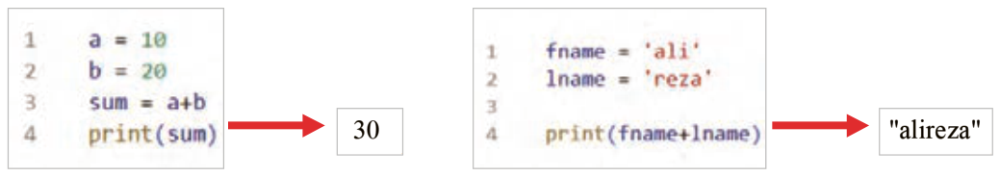
شکل ۲۱
صفحه ۱۲
برخی از انواع عملگرها در پایتون
جدول1 برخی از عملگرهای ریاضی را نشان میدهد که میتوانید از آنها در انجام محاسبات ریاضی استفاده کنید.
جدول ۱
عملگر ریاضی
عملگر
کاربرد
+
جمع
-
تفریق
*
ضرب
/
تقسیم
%
باقی مانده تقسیم
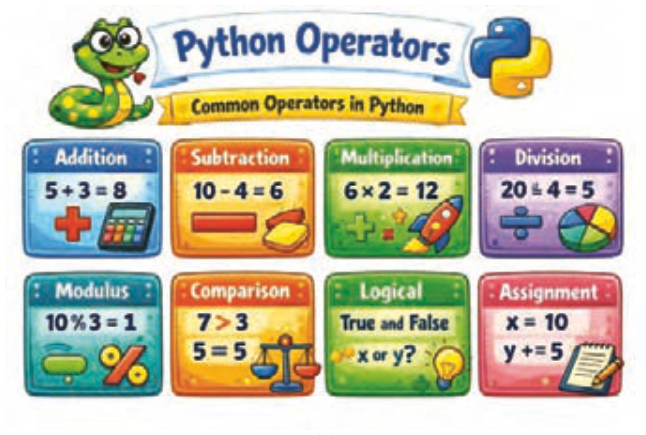
شکل ۲۲
دستورات ورودی و خروجی
دستور print() : پیشتر گفته شد که دستور print برای نمایش خروجی استفاده میشود و با برخی از کاربردهای این دستور نیز آشنا شدید.
تابع len() : گاهی لازم است بدانید یک متن چند کاراکتر دارد. این تابع تعداد کاراکترهای یک متن را محاسبه میکند (شکل23).
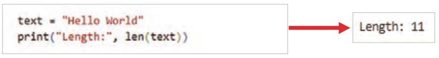
شکل ۲۳
دستور input() : برای دریافت داده از کاربر و ذخیره در متغیر از دستور input استفاده میشود (شکل24).
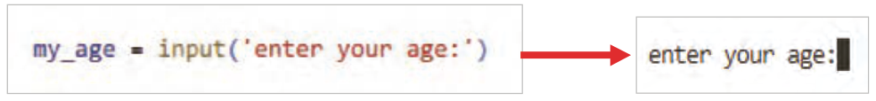
شکل ۲۴
Page 8
Variables and data types
A variable is a place in RAM used to store data temporarily. In Python you do not need to declare a variable first and then initialize it; the data type is detected automatically (Figure 14). Just write the variable name on the left of the assignment operator " = " and its value on the right. name="baran" , num = 55 Python supports several kinds of variables (Figure 15).
Figure 15Figure 14
Python works out the type of a variable from the value assigned to it.
Example: num1=15 in this example Python makes the variable an integer, and you do not have to state its type.
Common data types in Python
Figure 16
نوع داده رشتهای (str): هر چیزی که متن باشد، مثل اسم، پیام، ایمیل، رمز عبور، شماره تلفن، توضیح، نوع داده رشتهای (str) است.
The str type, short for string, can be defined with single, double, or triple quotation marks (Figure 16).
نوع داده عدد صحیح (int): عددهایی که با آنها محاسبه انجام میدهید و اعشار ندارند همان عددهای صحیح (int) یا همان integer، هستند (شکل17).
Figure 17
Page 9
نوع داده عدد اعشاری (float): این دادهها عددی هستند و در محاسبات ریاضی به کار گرفته میشوند و دارای مقدار اعشاری هستند. مثل:
height = 1.75
The type() function: the output of the type() function is the data type of a variable (Figure 18).
Figure 18
از این مرحله به بعد کدها را در محیط VS Code بنویسید. برای انجام این کار برنامه VS Code را اجرا کرده و سپس از منوی فایل دستور new folder یکپوشه جدید به نام PyProg ایجاد کنید و سپس در آن پوشه از منو فایل با انتخاب گزینه New File، کادر EXPLORER انتخاب دکمه New File و یا کلیدهای ترکیبی Ctrl+ N فایل جدیدی به نام prog01.py در این پوشه ایجاد کنید (شکل 19). حالا صفحه ویرایشگر کد باز شده و میتوانید دستورات خود را در آن بنویسید.
Figure 19
To run the statements, use the button at the top right of the program window or the Run menu. The result is shown at the bottom of the window (Figure 20).
Figure 20
Python style guide (PEP)
نحوه نگارش کدهای پایتون و قراردادهای کدنویسی را ارائه میدهد و باعث خوانایی بیشتر و تمیز (clean) شدن کدها میشود. برای مشاهده میتوانید به pep8.ir مراجعه کنید.
Page 10
در VSCode پس از کدنویسی با فشار کلیدهای Alt+Shift+F به طور خودکار بیشتر مشکلات فرمت کد را بر اساس pep8 اصلاح میکند. بهشرط آنکه یکی از افزونههای autopep8، Black formatter، Ruff یا yapf نصب شده باشد.
Rules for naming variables in Python
A variable name cannot contain a space. For example, you cannot define a variable named is valid.
نامگذاری متغیرها در پایتون باید با یک حرف یا زیر خط آغاز شود. مثل (num، _personal)
A variable name can contain letters, digits, and underscores.
نام متغیرها به حروف کوچک و بزرگ حساس است Age، age و AGE سه متغیر متفاوت هستند.
A variable name must not be one of Python's keywords. The names var, import, const, if, and for are wrong as variable names, because these words are Python keywords.
عملگر (operator): نمادهای ویژهای هستند که عملیات خاصی را روی مقادیر یا متغیرها انجام میدهند. در این عبارات a + b یا c * d یا 4/2 به +، * و / عملگر (operator) گفته میشود.
عملوند (operand): مقدار یا مقدارهایی هستند که عملگرها روی آن کار میکنند. مثلاً در عبارت a + b علامت "+" عملگر و a, b عملوند هستند.
Page 11
The operands of the " +" operator in Python can both be numbers or both be strings. In the first case you get mathematical addition, and in the second case concatenation (concatenation) (Figure 21).
Figure 21
Page 12
Some kinds of operators in Python
Table 1 shows some arithmetic operators you can use for math calculations.
Table 1
Arithmetic operators
Operator
Use
+
Addition
-
Subtraction
*
Multiplication
/
Division
%
Remainder of division
Figure 22
Input and output statements
The print() statement: you learned earlier that print is used to show output, and you have seen some of its uses.
The len() function: sometimes you need to know how many characters a text has. This function counts the characters of a text (Figure 23).
Figure 23
دستور input() : برای دریافت داده از کاربر و ذخیره در متغیر از دستور input استفاده میشود (شکل24).